Swipe down, tap כשר, and your phone becomes a kosher phone: only the apps you choose, no open internet, its own calm home screen. Tap again and enter your code to get your full phone back.
Android 10 or newer · tested on Samsung Galaxy A32 5G · stays kosher after a restart
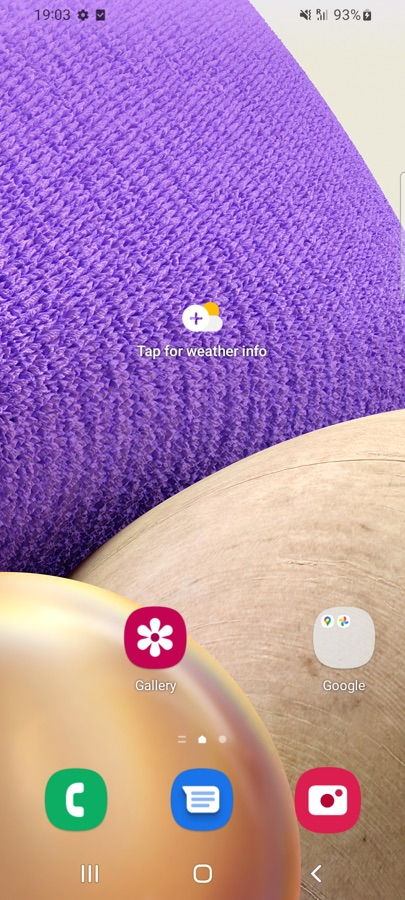
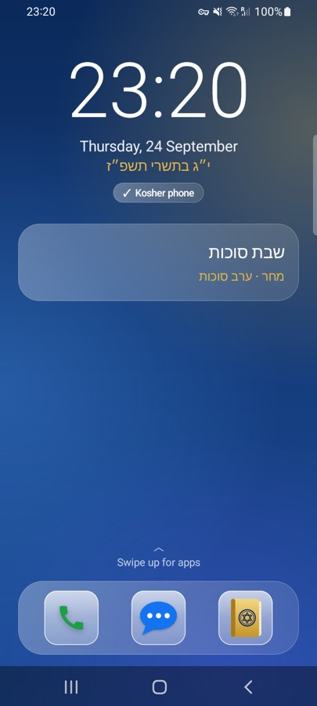
Kosher mode isn't a filter you can click past. The phone itself changes, and it stays that way until the code is entered.
Everything else disappears: browsers, stores, social media. Settings are locked, installing is blocked, safe mode is off.
Every app is cut off from Wi-Fi and data, except the ones you pick, like Waze. Notifications from blocked apps are hidden too.
A big clock, the Hebrew date, a glass widget with the parsha and zmanim, a dock, and a swipe-up drawer you arrange yourself.
Ashkenaz, Sefard and Edot HaMizrach. Every prayer as one text, a parts menu, search, and daily Tehillim. Fully offline.
Hebrew calendar, parsha, holidays, candle lighting and the day's zmanim, calculated for where you are.
Bold, headings, lists, tap-to-tick checklists and drawings in seven colors. Pin and search your notes.
"Wake me up at 7", "call Mom", "write a note with a recipe". It runs on the phone itself; nothing is sent anywhere.
Liquid-glass design, smooth animations, haptics, dark and light mode, five backgrounds, three icon styles.
Leaving takes your secret code. A restart doesn't turn it off, and five wrong codes lock the keypad for a minute.
All screenshots are from a Samsung Galaxy A32 5G running Kosher Switch.
Tap כשר in the swipe-down panel. The emblem spins in, the phone reshapes itself, and the kosher home screen builds in piece by piece.
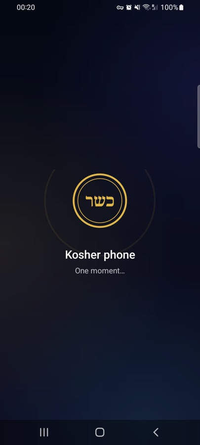
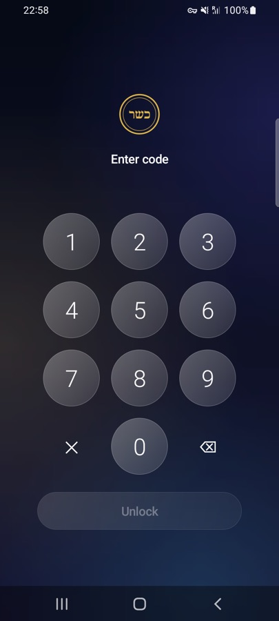
Swipe up for your apps on frosted glass. Hold any app to move it; hold a dock icon to swap it. Choose Kosher, Glass or Original icons.
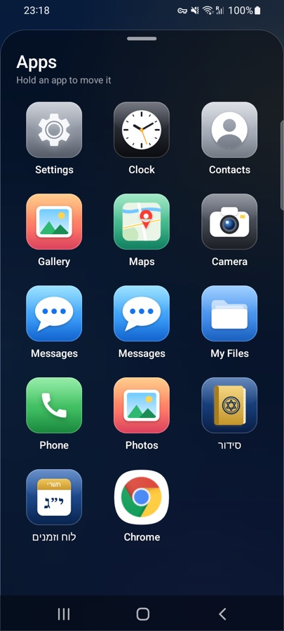
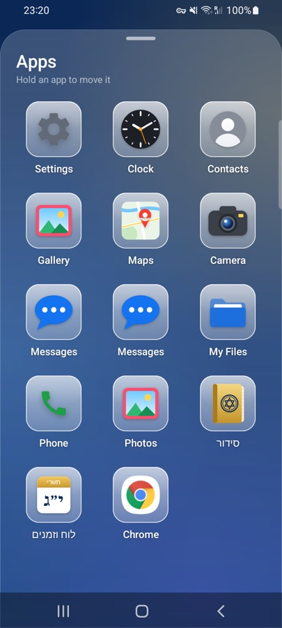
The right prayer for the time of day is waiting at the top. Every prayer opens as one continuous text, with a menu to jump to any part.
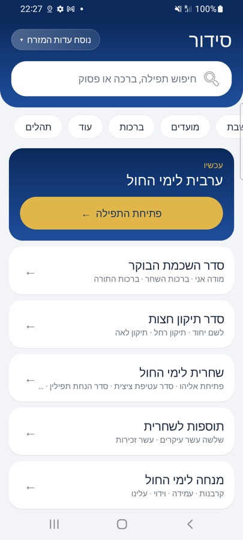
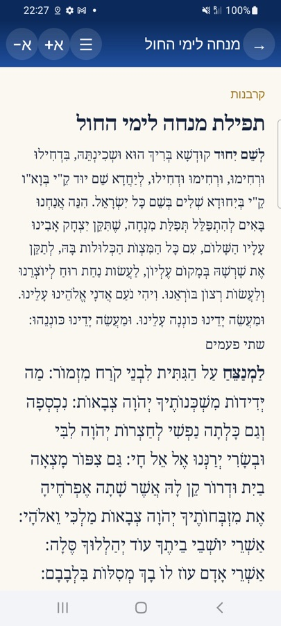
A small AI runs right on the phone. It makes calls, sets alarms, writes notes and answers questions. Food answers get an automatic kashrut check.
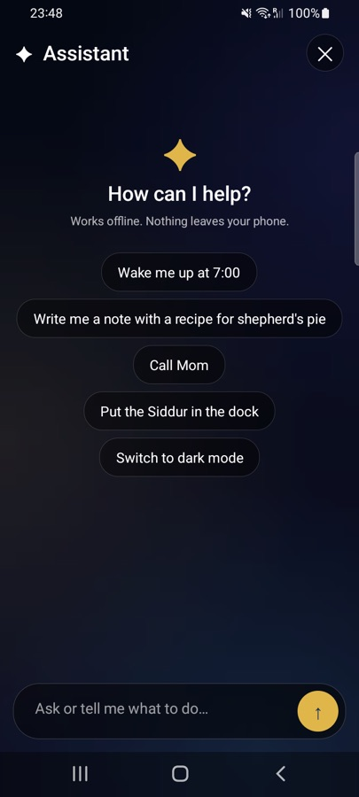
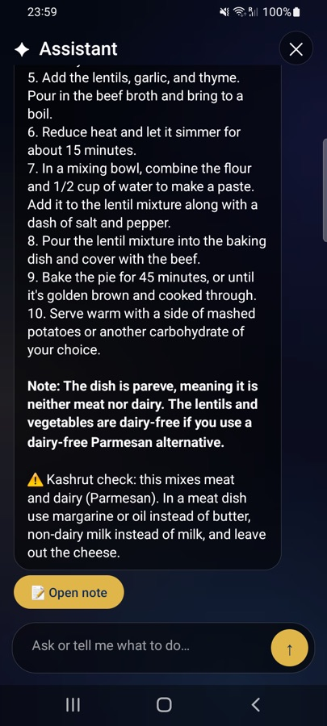
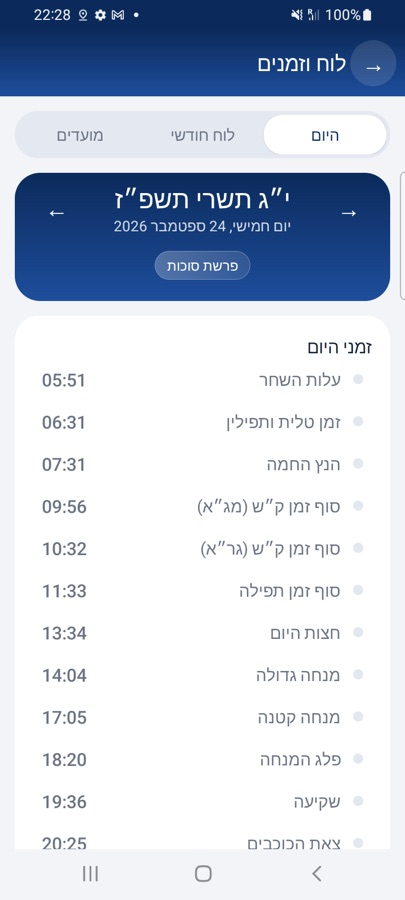
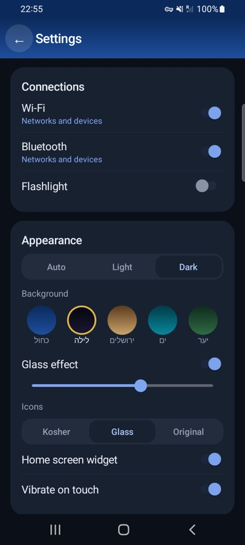
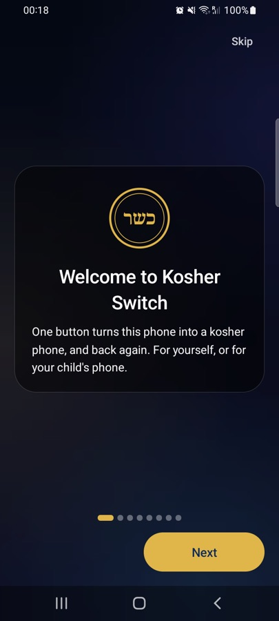
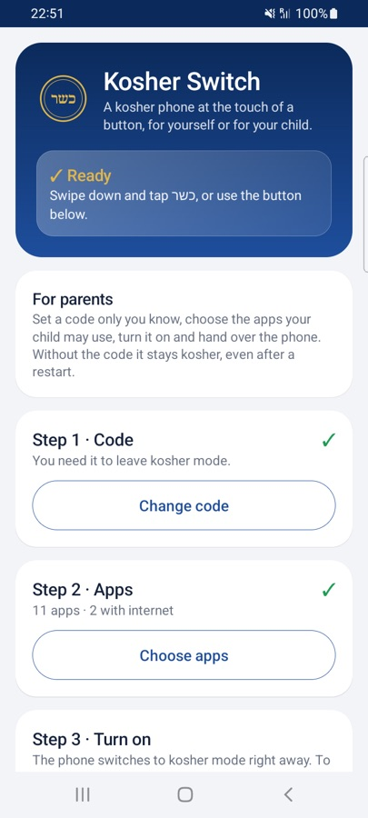
Choose a code only you know, pick the apps your child may use and which of them may go online, then turn it on. Without the code it stays kosher, even after a restart.
With the QR code on a freshly reset phone, or one command from a computer. Android requires this for any app that locks a phone.
The app's built-in guide walks you through it. Everything is included: siddur, calendar, notes, assistant.
Swipe down from the top and tap the כשר button. To leave, tap it again and enter the code.
Kosher Switch has to be the phone's "device owner". Android allows that only through one of these.
The phone downloads and sets up Kosher Switch by itself. Needs a phone with Google's setup screen.
adb shell dpm set-device-owner dev.kosherswitch/.KosherAdminYes. No ads, no accounts, no subscription. The code is public on GitHub.
Android only lets an app lock a phone if it's made the "device owner" in a special, one-time way. That rule protects everyone from malicious apps. Every parental-control and kosher-filter app on Android works like this.
Kosher mode blocks the Settings app, installing and uninstalling, account changes, VPN and DNS changes, factory reset from Settings, safe mode and USB debugging, and it survives restarts. A full factory reset with the hardware buttons can't be blocked by any app, but it erases the whole phone, so it can't happen unnoticed. No phone is 100% bypass-proof; this is a strong lock, not a guarantee.
No. It runs completely on the phone. Its AI part is an optional 1.6 GB download over Wi-Fi, done once in open mode. Nothing you ask is sent anywhere. It's a small model, so answers are simpler than online AI, and recipes get an automatic kashrut check.
Android 10 or newer with a 64-bit processor. It's tested on the Samsung Galaxy A32 5G (Android 12). QR setup also needs Google's setup screen.
No. Kosher Switch is a tool. For a certified kosher phone, speak to your rav or a recognized kashrut organization. Parents remain responsible for how a phone is used.
Because it protects itself as device owner, removing Kosher Switch requires a factory reset. Back up the phone first.
Download Kosher Switch, set it up once, and your phone is kosher with a single tap.